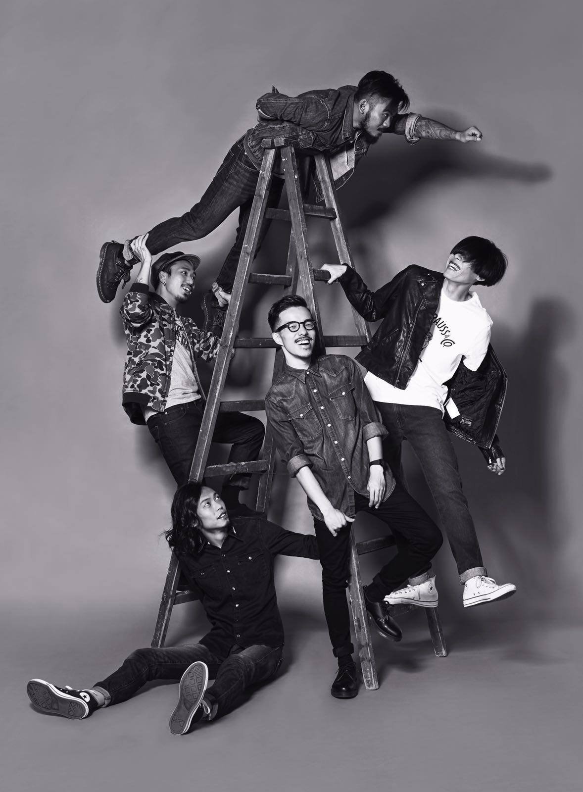

Chochukmo has been selected as the “Top 20 Hong Kong Musicians” by Time Out Hong Kong in 2008, has been described as “the most charismatic band to have emerged in southern China in recent years” by TIME Magazine, and has been included in “The Hong Kong Hot List: 20 people to watch” by CNNGo in 2009. Their debut album "The King Lost His Pink" has been as well reviewed by TIME Magazine in 2010.
Chochukmo (Chinese: 觸執毛) is a 5-piece indie rock band based in Hong Kong, with Jan Curious on vocal, Mike Orange on guitar and synthesizer, Les Hunter on guitar, Fai on bass, and Kitty Trouble on drum and percussions. Formed in the summer of 2005, the band has experienced a few member changes, with the current line-up formed in the spring of 2008. The band's sound is always being described as a genre-blender, experimenting rock with some other different styles of music. The band is generally being categorized as indie rock while some considered the band's style as math rock.
In the summer of 2005, Jan Curious (from League of Heroes) and Mike Orange (from Homework) suddenly came up with an idea of having a side-project when they're jamming at a studio, while at that moment they were both belonged to different bands. With the joining of bassist Yanyan Pang (from Hard Candy) and drummer Cheong Ho (from Innisfallen), the first generation of Chochukmo was officially formed, with its sound characterized by punk and garage rock influences. Considering the band as solely a side-project, the members of the band had no plan of recording anything. In the spring of 2006, guitarist Mike Orange decided to leave the band due to his personal reasons.
As guitarist Mike Orange departed, Ka-sing Law was then being recruited as the new guitarist. The band has toured to Manila, Philippines in 2007, and had their self-recorded demo CD distributed there. In the spring of 2008, guitarist Ka-shing Law and drummer Cheong Ho decided to leave the band to concentrate on their own music projects.
With the joining of new guitarist Les Hunter (formerly from An id signal) and new drummer Kitty Trouble (former from League of Heroes), plus the return of former guitarist Mike Orange, Chochukmo has come into a 5-piece. With no intention to play any formerly written songs (except the track "Caroline"), the members came into a new set of songs and had their debut gig in July 2008. The band has made part of a compilation album released by The Underground HK by contributing 2 tracks to the double CD album. The band was then being selected as "Top 20 musicians in Hong Kong" by Time Out Hong Kong, along with the acclaimed musician Anthony Wong Yiu-Ming and alternative singer Denise Ho.
The band has been touring to Manila, Philippines (with Carina Ho on bass and Chi-kin Wan on drum) and Kuala Lumpur, Malaysia in 2009, alongside some indie bands around Asia such as I am David Sparkle, Free Love, Everybody Loves Irene etc. Bassist Yanyan Pang announced her departure after the Malaysia tour, due to the creativity differences. With no replacement to the bassist position, Alvin Lo came into the band as a supporting bassist.
The band has won the "We'll Make Your Album" contest hosted by Time Out Hong Kong and Diesel in September 2009, which the contest promised to release an album for the winning band. Chochukmo was chosen as the winner by a team of judges including Kelvin Avon, Anthony Wong Yiu-Ming, Wong Ka Keung and Wong Chi-Chung. With the support from Time Out Hong Kong and Diesel, the band then released its debut album "The King Lost His Pink" on 28 November 2009, with the album mixed and mastered by Kenneth Tse from The invisible Men, and the album cover designed and painted by Simon Birch.
Being described as "The most charismatic band to have emerged in southern China in recent years" by TIME Magazine, the band has been selected into the "Hong Kong Top List: 20 people to watch" by CNNGo in December 2009.
Yanyan Pang departed from the band in July 2009. Since then the band went on as a 4-piece with supporting from different bassists namely Vanilla Lau (aka Winnie Lau) (Tacit Closet, Noughts and Exes) and Alvin Lo. Kento Anything was then being recruited as bassist in February 2010.
"Perhaps the most charismatic band to have emerged in southern China in recent years"
Debut album "The King Lost His Pink" review
Far far away, behind the word mountains, far from the countries Vokalia and Consonantia, there live the blind texts. Separated they live in Bookmarksgrove right at the coast of the Semantics, a large language ocean.